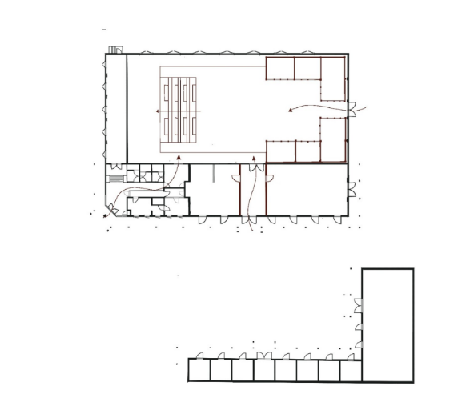
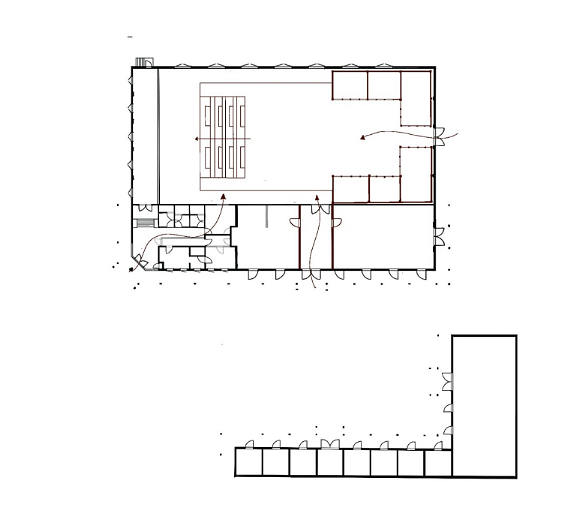

← OntwerpstudioDe Manege: twee gebouwen en het plein
De volledige afbeelding uit de aangeleverde bouwtekening. Geen uitsnede, rotatie, perspectiefcorrectie of AI-reconstructie. Absolute maatvoering is niet geverifieerd.
Origineel

Leesversie
Alleen contrast en lichte verscherping; exact dezelfde afmetingen en geometrie.
